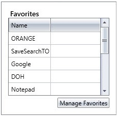

Favorites
A favorite is a quick link to a resource that you access frequently to complete your own work. It can be a link to a file or a program, a bookmark, or a saved search that is created within the IWMS Client. You can manage your own favorites.

Manage Favorites
This section explains how to add, update, or delete favorites. You can manage all types of favorites using the Manage Favorites dialog box.
Link to a Program or File
- Click Manage Favorites.
- The Manage Favorites dialog box is displayed.
- In the Link Name box, type a name for the link. The name entered here is displayed in the Favorites section on the home page. It is recommended to enter a suitable name for easy reference.
- Click Browse to Program/File.
- The Open dialog box is displayed.
- Navigate to the location of the file, select the file, and then click Open.
- The path of the file is displayed in the Link Path box.
- Click New Link.
- The link is added to the Manage Favorites dialog box.
- Click OK.
- The link is added to the Favorites section on the home page.
Link to a Bookmark
A bookmark is a link to a location inside a document. If you want to visit a certain page or a location inside a document frequently, you can add a bookmark, create a link to the bookmark, and quickly access the page when required. For more information about creating a bookmark, see Bookmark.
- Click Manage Favorites.
- The Manage Favorites box is displayed.
- In the Link Name box, type a name for the link. The name entered here is displayed in the Favorites section on the home page. It is recommended to enter a suitable name for easy reference.
- Click Link to Bookmark.
- The Link to Bookmark dialog box is displayed.
- Select the bookmark, and then click OK.
- The document name is displayed in the Link Path box.
- Click New Link.
- The link is added to the Manage Favorites dialog box.
- Click OK.
- The link is added to the Favorites section on the home page.
Link to a Saved Search
A saved search is a search result that you generate by providing the required search criteria.
- Click Manage Favorites.
- The Manage Favorites box is displayed.
- In the Link Name box, type a name for the link.
- The name entered in the Link Name box is displayed in the Favorites section on the home page. It is recommended to enter a suitable name for easy reference.
- Click Link to Saved Search.
- The Link to Saved Search dialog box is displayed.
- Select a saved search, and then click OK.
- The saved search name is displayed in the Link Path box.
- Click New Link.
- The link is added to the Manage Favorites dialog box.
- Click OK.
- The link is added to the Favorites section on the home page.
Update a Link
- Click Manage Favorites.
- The Manage Favorites box is displayed.
- In the Name list, select a link.
- The values are populated in the Link Name and the Link Path boxes.
- Modify the link name and/or the link path.
- Click Update Link.
- Click OK.
Delete a Link
- Click Manage Favorites.
- The Manage Favorites box is displayed.
- In the Name list, select a link.
- Click Delete Link.
- The link is removed in the Manage Favorites dialog box.
- Click OK.
- The link is removed in the Favorites section on the home page.